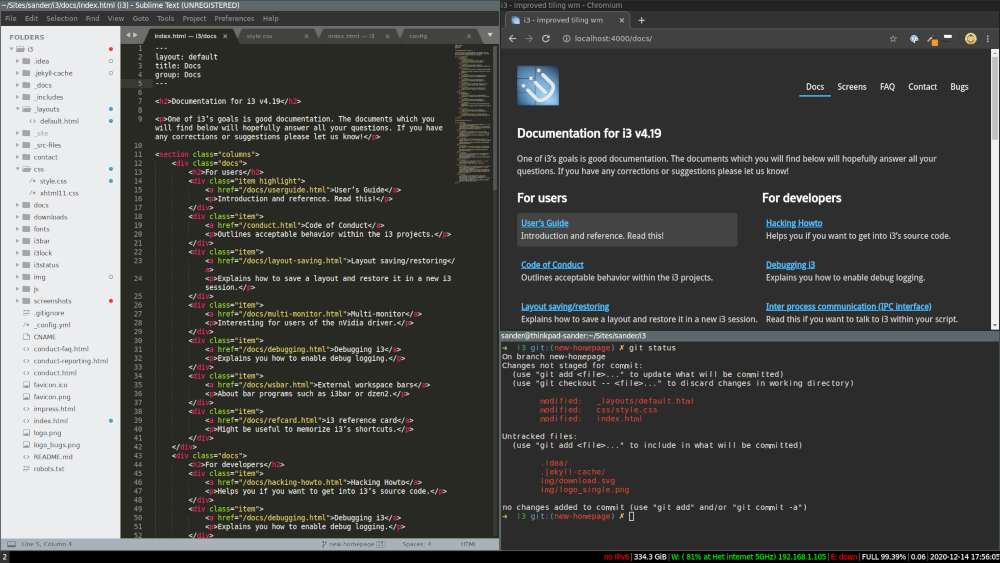

Do What I Mean. Good Docs. Clean Code.
i3 is a tiling window manager for GNU/Linux and BSD operating systems, completely written from scratch. Targeted at advanced users and developers, it can be controlled entirely from the keyboard and allows windows to be moved between monitors/workspaces easily. Our code is Free and Open Source Software (FOSS) under the BSD license.
➡
Download the latest version
4.19
to learn more, read the User’s Guide or watch the screencast!

Based upon the experiences we made when wanting to hack/fix wmii, we agreed upon the following goals for i3:
-
Write well readable, well documented code. Create additional
documentation on how to extend i3 by explaining its internal workings.
This includes being modifiable by people who do know how to program but who are
not necessarily familiar with all of X11’s internals. That is, document why
things happen and when they happen so that the user gets a picture of the whole
process a Window Manager is responsible of by just reading the source code.
-
Use xcb instead of Xlib. xcb has a much cleaner API and should be faster in
quite a lot of situations.
-
Implement multi-monitor correctly, that is by assigning each workspace to a
virtual screen. Especially make sure that attaching and detaching new monitors
like video projectors works during operation and does the right thing. Also
provide support for rotated monitors.
-
Use a tree as data structure. This allows for more flexible layouts than
the column-based approach used by other window managers.
-
Implement different modes, like in vim. You can use different keybindings
when in the 'resize' mode than when you are in the default mode, for
example.
-
Implement an IPC interface for other programs. Provide subscription to
certain events and accept commands.
This approach should be more lightweight than wmii’s usage of the 9P filesystem.
Furthermore, core functionality does not depend on a separate program, so that i3
runs faster, especially when your system is under load.
-
Be UTF-8 clean.
-
The usual elitism amongst minimal window managers: Don’t be bloated, don’t be fancy
(simple borders are the most decoration we want to have).
However, we do not enforce unnecessary limits such as a maximum amount of source lines
of code. If it needs to be a bit bigger, it will be.
In addition to these stated goals, we try our best to uphold the following
values when considering contributions to the project:
-
Never break configuration files or existing workflows. Breaking changes
require a major version bump (v4 → v5).
-
Keep mental complexity low: once you know i3’s key features, other features
should be easy to understand.
-
Only add features which benefit many people, instead of going to great
lengths to support rarely used workflows.
-
Only documented behavior is supported. Clear documentation is a requirement
for contributions.